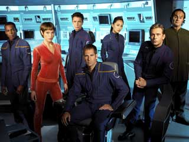
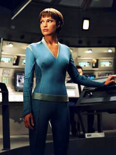

|
A
nova cara de Enterprise
 Como
dizem por aquelas bandas, tempo de "make or break" para
Enterprise. A srie adentra sua terceira temporada
com a misso de fazer tudo que no conseguiu at agora --
manter a audincia interessada semana aps semana. Como
dizem por aquelas bandas, tempo de "make or break" para
Enterprise. A srie adentra sua terceira temporada
com a misso de fazer tudo que no conseguiu at agora --
manter a audincia interessada semana aps semana.
No comeo do primeiro ano, aps uma estria espetacular para
a moribunda rede de TV da Paramount nos EUA, Enterprise
foi aclamada como a chance de ressurreio para a desgastada
franquia. A queda de audincia ao longo da primeira temporada
foi paulatina, mas ao final, at mesmo as publicaes especializadas
consideravam a srie um sucesso de pblico, dada a baixa cobertura
e audincia mdia da UPN.
Mas os ndices no se estabilizaram num nmero razovel, como
os produtores torciam para que acontecesse. Em vez disso,
continuou caindo consistentemente ao longo da segunda temporada,
enterrando a srie atrs dos pfios nmeros obtidos por
Voyager em suas ltimas temporadas.
O fracasso completo de "Nmesis" nos cinemas
americanos no ajudou a restabelecer a confiabilidade da franquia
e provavelmente fechou um ciclo de produes cinematogrficas
de Jornada nas Estrelas (se um novo ciclo ser aberto
no futuro e quando, impossvel prever).
Rick Berman e Brannon Braga finalmente chegaram concluso
de que sua estratgia para recuperar o prestgio perdido com
a nova srie no estava funcionando. Decidiram ento "reinvent-la",
criando um mecanismo que em tese deveria prender o pblico
com o passar dos episdios --um arco contnuo de histrias.

Num nvel mais superficial,
o que ocorre com Enterprise no incio de sua terceira
temporada no muito diferente do que vimos na srie de
Jornada que Berman & Braga adoram esquecer, Deep
Space Nine. Nunca demais lembrar: DS9 caminhou
por duas temporadas numa trilha mais ou menos incerta, at
que, ao final do segundo ano, o conceito do Dominion, com
seus generais e diplomatas Vortas e seus guerreiros Jem'Hadar,
produziu um senso de continuado propsito a Sisko e seus comandados:
defender o quadrante Alfa de uma invaso iminente.
Se h um paralelo entre o que ocorreu em DS9 e em
Enterprise, ento as mudanas operadas na srie de
Archer e cia. em sua terceira temporada so motivo de comemorao.
So poucos os que questionam o incrvel salto de qualidade
dado pelo programa protagonizado por Sisko e seus comandados
(um fenmeno que, por diferentes razes, tambm ocorreu em
A Nova Gerao, a partir do terceiro ano).
Acontece que as duas situaes s so semelhantes quando se
v a superfcie. Ao mergulharmos mais nos detalhes, percebemos
que talvez seja muito mais o caso de temermos pelo pior --
o cancelamento prematuro da srie, uma coisa que no ocorria
em Jornada desde 1969.
Por qu? Simples. Em Deep Space Nine, as mudanas
introduzidas a partir do terceiro ano serviram para direcionar
um curso previamente estabelecido -- era uma correo de rota
de algo que em nenhum momento seria abandonado. Tome por exemplo
o que ocorre no piloto da srie, "Emissary":
a trajetria de Sisko como o emissrio dos Profetas um tema
que seria consistentemente abordado at o episdio final.
Num outro exemplo, a introduo da Defiant (ocorrida ao final
do segundo ano) no impediu que a estao continuasse sendo
o palco central dos eventos da srie.
No caso de Enterprise, o que Berman e Braga fizeram
foi simplesmente reiniciar a srie, abandonando completamente
a premissa original: as viagens de explorao da primeira
nave interestelar de longo alcance da Frota Estelar. Agora,
a partir de "The Expanse", a srie passa a ser:
a corrida da NX-01 para impedir os Xindis de destrurem a
humanidade.
A no ser que algum considere que a Guerra Fria Temporal,
no a histrica misso da NX-01, seja o foco de Enterprise,
impossvel dizer que estamos vendo o fluxo natural dos eventos
mostrados no incio da srie.
"The Expanse" tem toda a cara de segundo piloto. A
Enterprise volta Terra, "reseta" sua misso, parte atualizada
da doca seca (a tomada de efeito visual a mesma vista em
"Broken Bow"!) e ruma para a Expanso Dlfica,
onde um novo objetivo e uma nova premissa devem nortear a
srie.
No caso de DS9, foi uma correo e maior especificao
de curso. Em Enterprise, quase um ato de desespero.
Claramente, os produtores esto fazendo qualquer negcio para
tentar revigorar o interesse pela srie e restaurar os ndices
de audincia. Esse o tom das modificaes. Veja por exemplo
a troca de uniforme e penteado de T'Pol, que agora est mais
sensual do que nunca (ela uma Vulcana, no se esquea!).
Descubra agora de onde veio isso.
Em entrevista Associated Press, a presidente da UPN, Dawn
Ostroff, declarou que Enterprise foi uma decepo
no ano anterior, mas que mudanas esto previstas para a nova
temporada. Segundo ela, T'Pol, interpretada pela "babe" Jolene
Blalock, ir "explorar seu lado sexual". "Ela vai se soltar
um pouco", diz.
 Eu no
tenho nada contra mulher bonita, mas, honestamente, no vejo
Enterprise (ou Jornada nas Estrelas em geral)
pelas formas, e sim pelo contedo. Esse tipo de movimento
deve alienar ainda mais os fs tradicionais, que j foram
ultrajados pela retirada das palavras "Star Trek" do ttulo.
Mas tudo isso no quer dizer que a srie v piorar ou que
devamos perder a esperana nela. Algumas vezes, um time em
desespero que escala seis atacantes consegue marcar um gol
e vencer uma partida. A m notcia que, na maioria das vezes,
a equipe toma o gol, em vez de faz-lo.
Enterprise corre o mesmo risco. A nova temporada tem
potencial e h uma srie de histrias interessantes que podem
advir da ameaa Xindi (o prprio conceito multiespecfico
desses aliengenas interessante) e de sua relao com a
j apresentada (mas muito mal explicada) Guerra Fria Temporal.
Por outro lado, tudo isso vai depender da qualidade dos roteiros
e das histrias. Infelizmente, o retrospecto no positivo
para Enterprise. No que a srie seja ruim -- ela ,
pelo menos at agora, excessivamente "mediana". No h muitos
episdios insuportveis, nem muitos segmentos espetaculares.
Pode at dar certo. Vou acompanhar as modificaes com algum
otimismo -- afinal, pela primeira vez Berman e Braga mapearam
uma temporada inteira com antecedncia, coisa que no era
feita desde, adivinhe, Deep Space Nine, que tinha
participao mnima de Berman e nenhuma de Braga. Mas no
podemos nos iludir e achar que, com certeza, tem tudo para
dar certo.
Para quebrar a monotonia de duas temporadas sem rumo certo,
os produtores decidiram radicalizar. A introduo dos MACOs
("marines" do espao, vindos do exrcito terrestre diretamente
para a NX-01) deve dar uma nova dinmica ao elenco principal,
assim como a postura mais agressiva de Archer e Trip. Mais
ainda do que aconteceu nas duas temporadas anteriores,
Enterprise deve estar direcionada aos interessados em
ao e aventura.
Se ser para o bem ou para o mal, vai depender mais dos roteiristas
e produtores do que de seu pblico. O resto conseqncia.
Salvador
Nogueira, jornalista, escreve regularmente
sobre a nova série de Jornada nas Estrelas para
o Trek Brasilis.
|